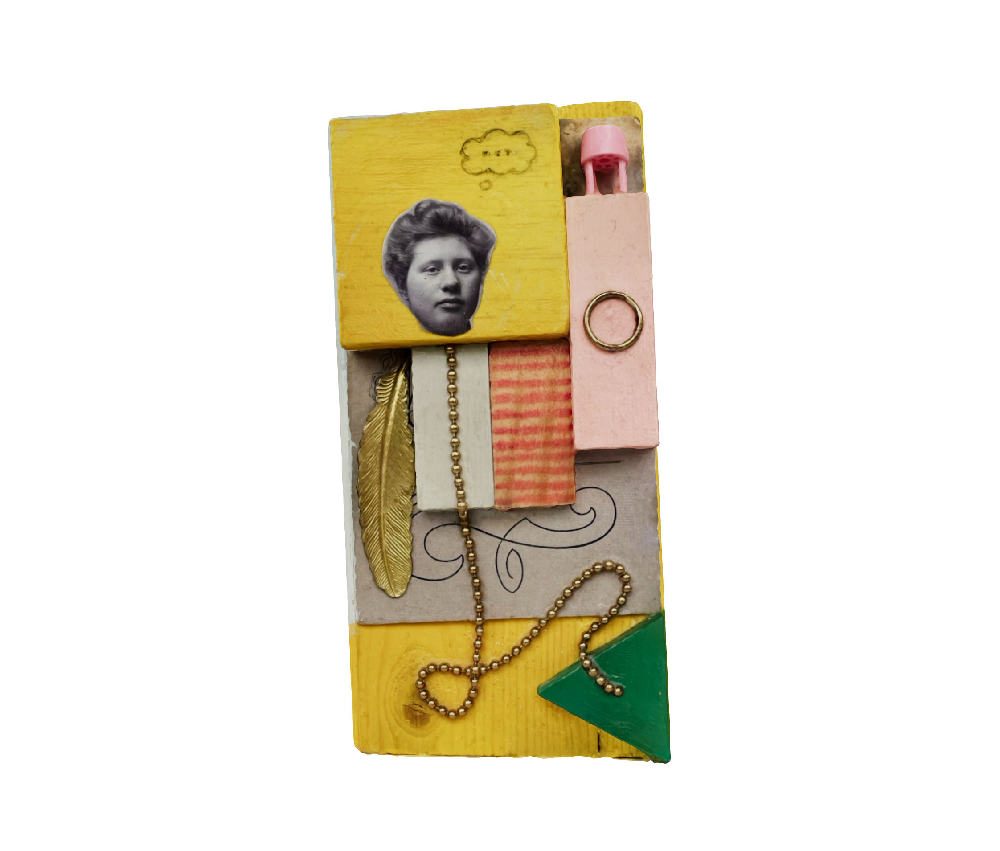
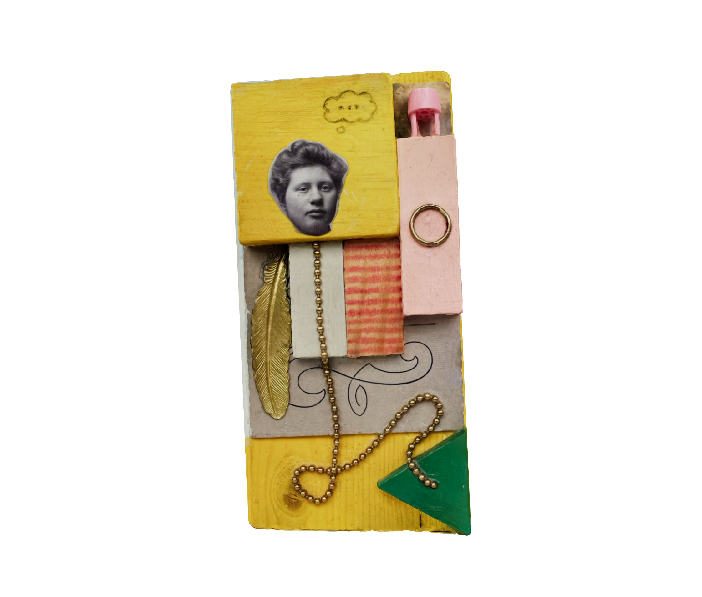
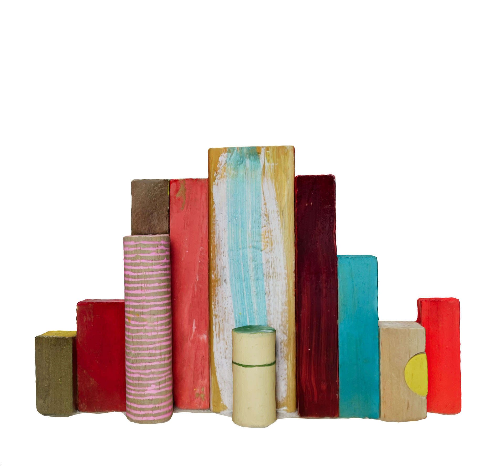
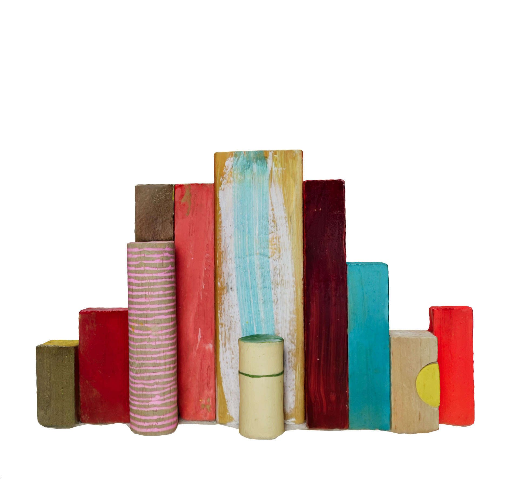

about:

Rinske Dekker is an artist who works and plays in her home studio in Amsterdam.
She paints and draws on small and tiny pieces of second hand wood, like old toy blocks or pieces found on the street with which she then makes small sculptures and assemblages.
Her work is about memories, dreams, stories and observations. How personal they can be. How alternately vague and clear they can be in your head. How surreal, beautiful or ugly and how personal that is too.
In all that humour and play is also very important.
Next to that it is about colour. She loves colour and loves to research how colours work together. And in that textures and shapes are very important. Colours work differently in different shapes, sizes and combinations.
Her main materials are acrylic paint, (graphite) pencil and wood. Sometimes a vintage portrait photo or a bit of plastic or metal works its way in as well.
contact:
rinske.dekker@gmail.com


 


 
